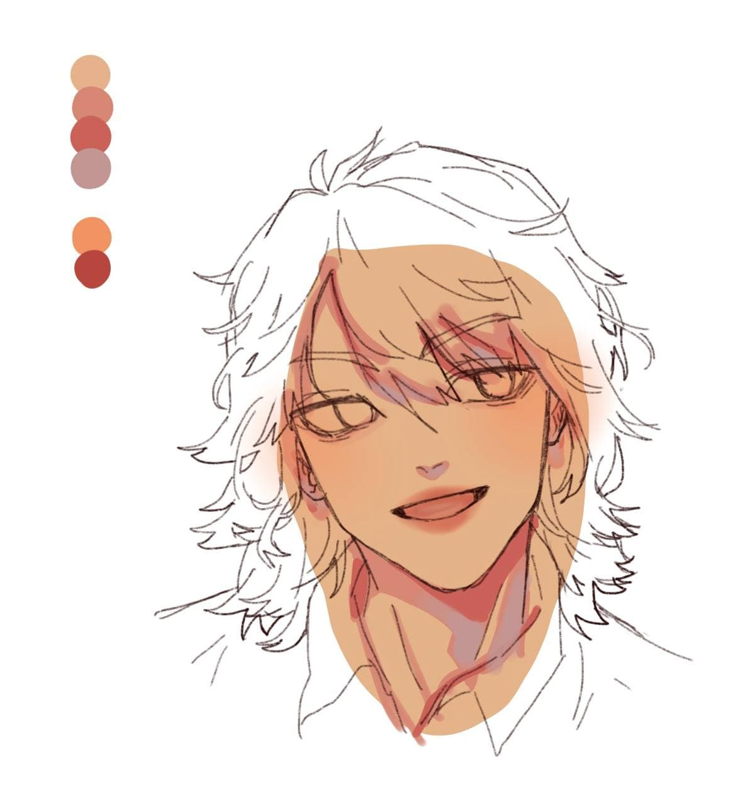
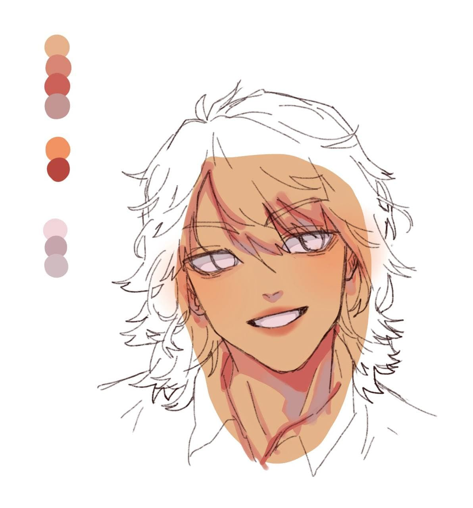
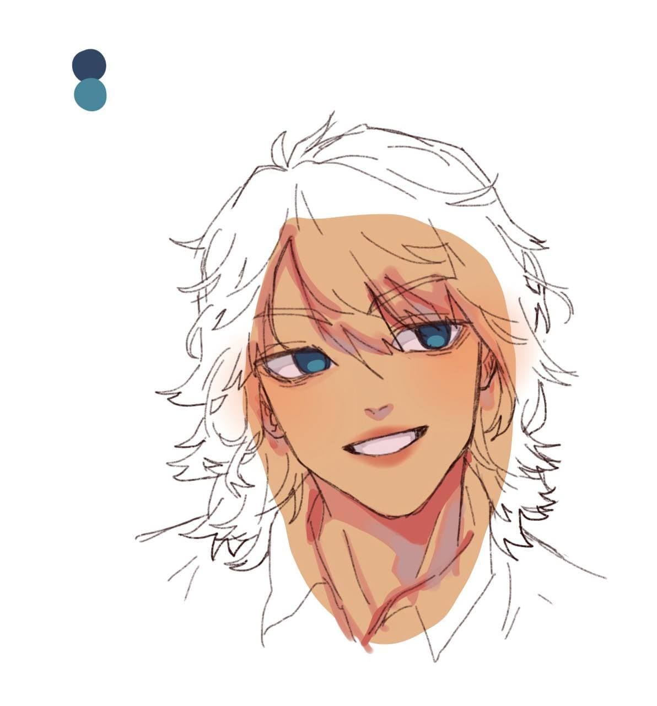
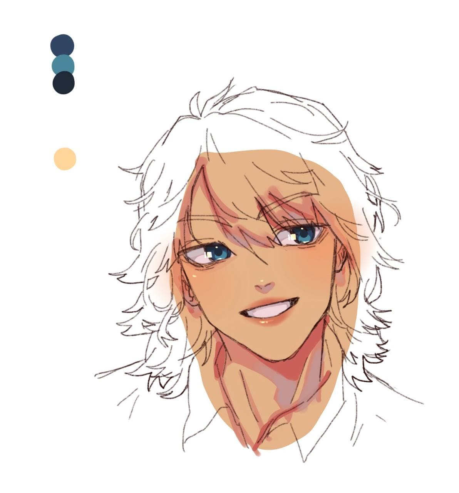
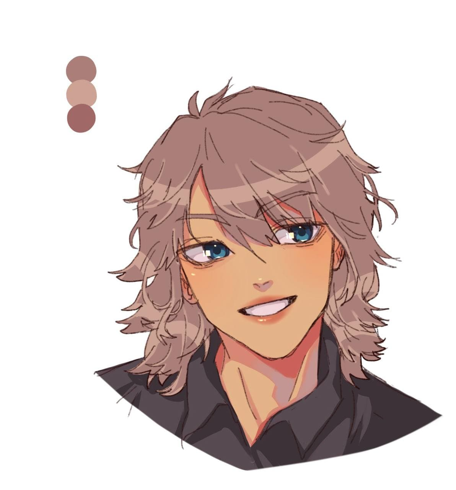
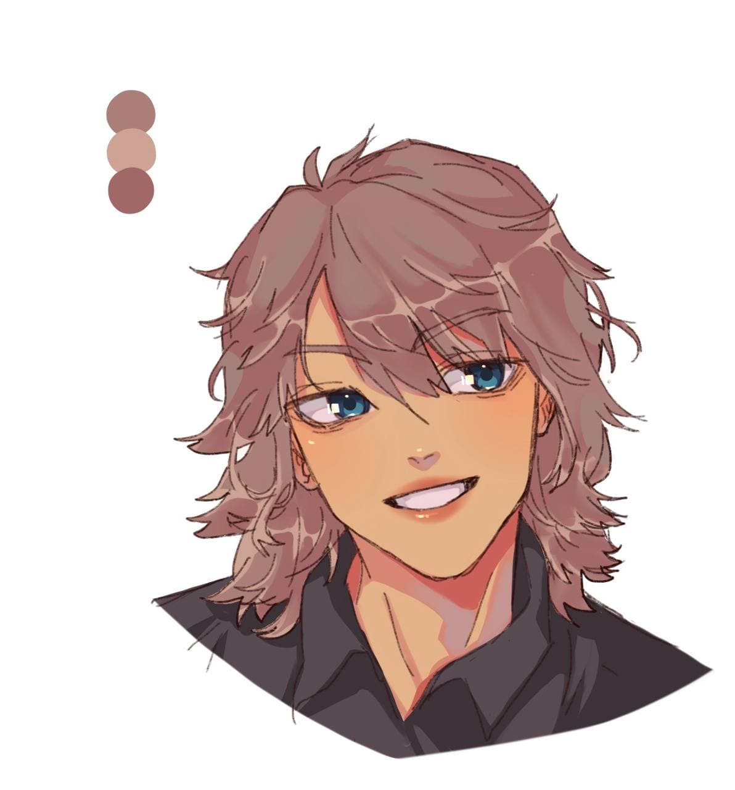

Start off with a base color, then choose a medium shadow that is slightly pink. For the darkest shadows, add it to the darkest areas of the face
Use a slightly grayer color to add a reflective light to the shadows, which adds more depth. Then use orangish colors for the lips
Use a light gray purpleish color for the whites of the eyes, add the shadow, then a grayer reflective light
Color in the eyes with the base color, then a paint a lighter and more saturated color as little ovals at the bottom
Use a dark, almost black, color to add the pupils, then a slight shadow on the iris
Using the luminosity or add effect, create highlights on the eyes, nose, cheeks, and lips
For the hair, create a ring around the head with a lighter color. Then add some extra lines next to the lines you already made in the line art
Use your darker color and make 'H' figures by drawing negative space into the highlights
Create more highlight following the ring you made before. Make sure to scatter, so that it does not look unnatural